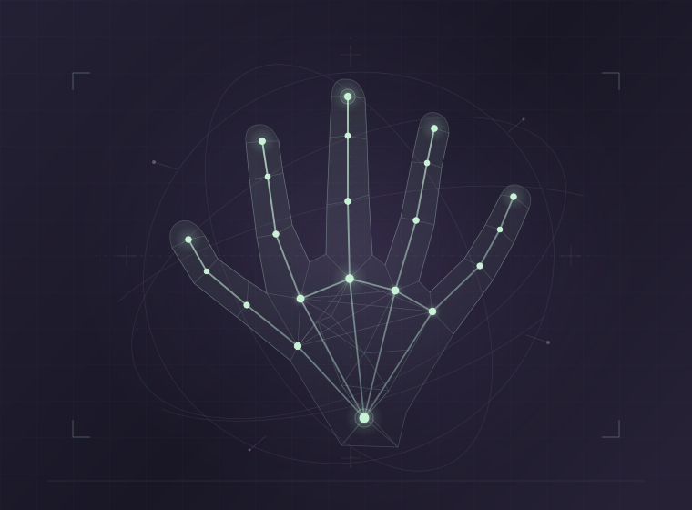

Accessibility · Computer vision
SignSpeak
A proof of concept that reads American Sign Language from a webcam, then shows the English translation and reads it aloud. Landmarks are extracted in the browser and classified by a BiLSTM model running on ONNX Runtime.